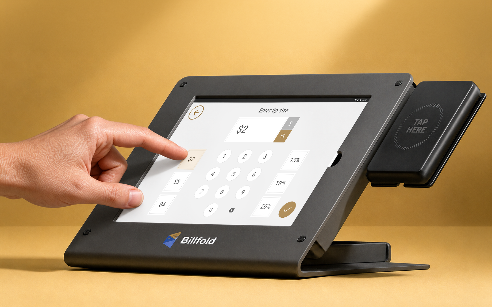
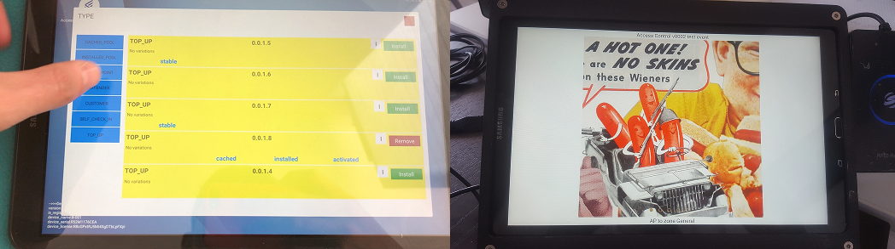
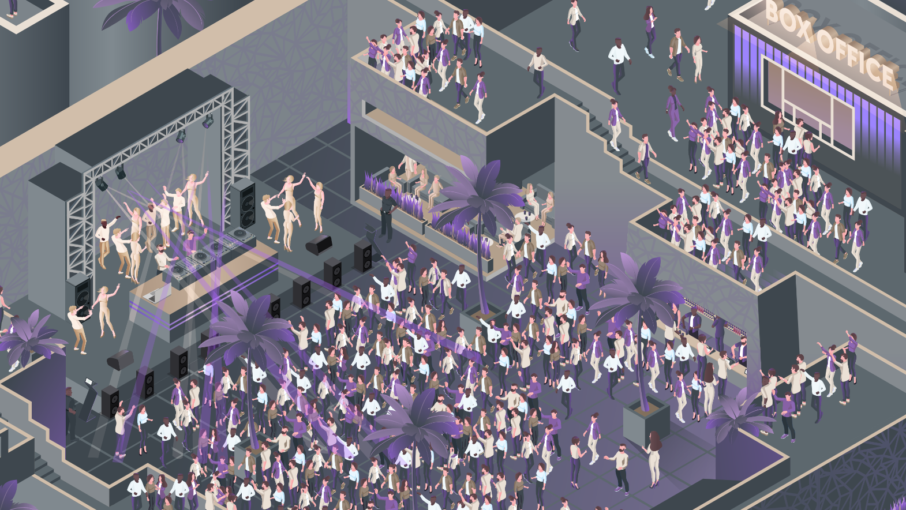
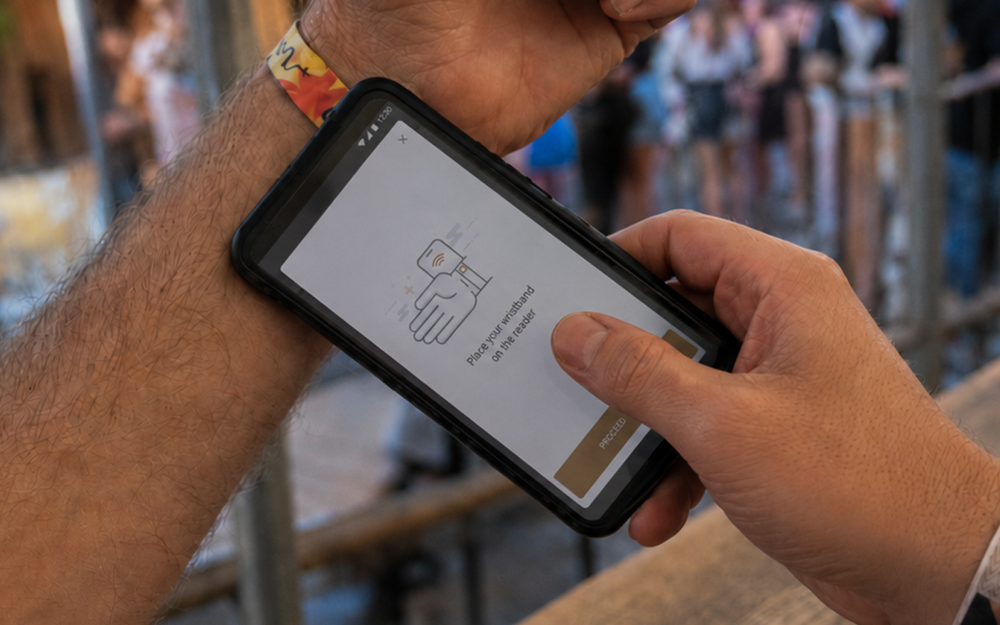
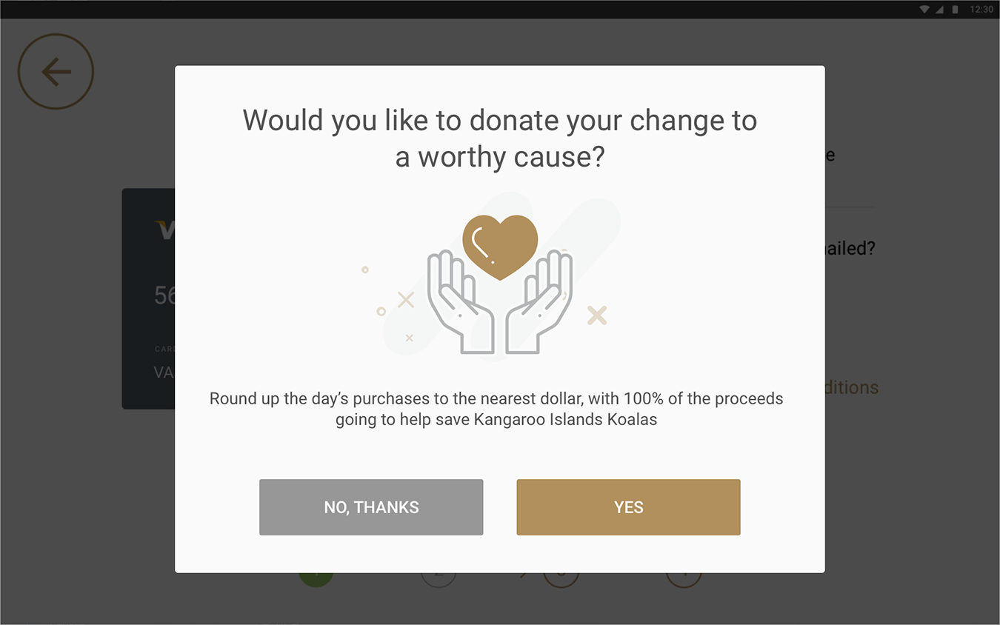
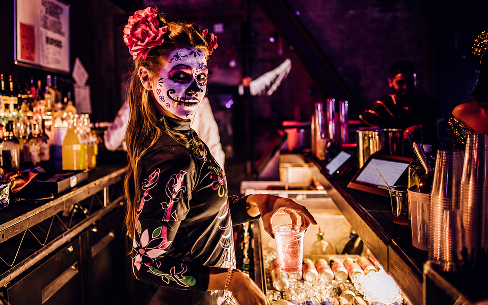
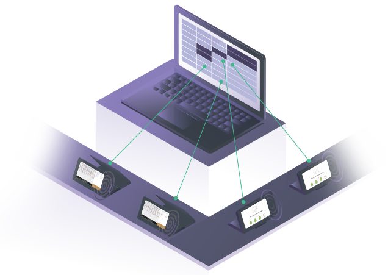
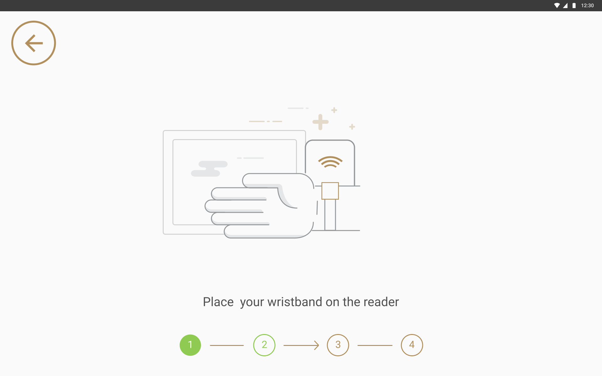
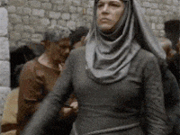
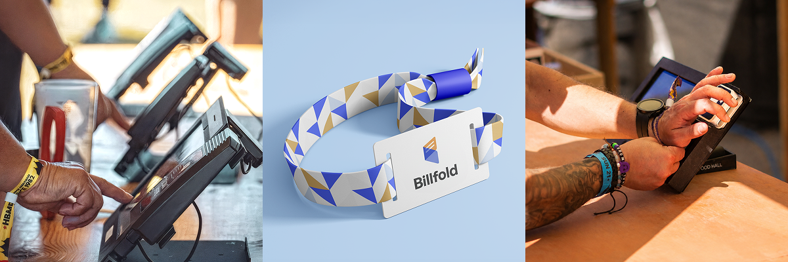

Getting in
One registration flow reachable four ways, configured per event
Kiosk · Host’s phone · Web · Cash desk
SUMMARY
Billfold replaces cash and cards at live events with RFID wristbands. As the sole product designer, I built the connected system behind it: the dual-screen POS, guest screens, registration kiosks, gate screens, table service tablets, and the web and mobile interfaces for guests, staff and vendors. It ran at everything from a 500-person club night to city festivals with a few hundred thousand people through the gates.
My role
Sole product designer
Team
Founders · PMs · Engineering · QA · Industrial & graphic designers · Me
Timeline
2017–2018Shaping the idea and
the device
2018–2020First interfaces,
first vendors
2020–2022Events stop. Work continues
in the background
2022–2024Larger venues,
new products

* Figures measured and reported by Billfold and its clients.
Cash and cards both made the bartender wait. Tapping a wristband did not, and bartenders put through 23% more orders because of it. The POS kept selling through network drops, with 99% of offline transactions completing successfully.
When paying takes one tap, spending stops feeling like spending. Per-person spend rose by up to 67% at some venues, and RFID guests spent over twice what card guests did at large festivals.
Billfold started at a single club in Brooklyn. By the time I left it was running clubs, festivals and stadiums worldwide, including Cityfox, Elements, Art With Me in Tulum and BPM Costa Rica.
STARTING POINT
STARTING POINT
I joined Billfold to design a product that did not exist yet: paying at a festival with a wristband linked directly to a bank card. Nobody on the market was doing that.
There was no product yet, just an idea and a tablet. My job was to turn that into a payment system that works at a bar at 4am, when the network is down and forty people are waiting.
RFID wristbands already existed at festivals in 2017, but they ran on top-ups. You loaded money on before the doors and queued for your change after the show. Billfold was meant to work the other way round: link a bank card once, then stop thinking about paying.
Comparison of guest payment flows. With top-up RFID wristbands, guests queue before the doors to buy a band and load money, queue again during the event whenever the balance runs out, and queue after the show to reclaim unspent money. With Billfold’s linked bank card, guests queue once to link a card, then tap freely during the event and walk out afterwards.
I was brought in because I had spent years designing POS systems for retail chains, and knew how screens behave when they are bolted to hardware and used by people with almost no training. But a shop counter is lit, and the cashier behind it comes back tomorrow. None of that was true at a festival bar at midnight.
When I joined, the product was one tablet with an RFID reader attached to it. Nothing had been designed yet.
The very first setup: a tablet and a reader. I still keep them, out of sentiment more than anything. First housing drawings. Screen, RFID zone, card reader. The card reader sat inside the device. Once the wristband became the main payment method, it came out. A custom enclosure made for us, thin and backlit. Beautiful, and far too expensive to produce. What shipped. A rigid case the tablet drops into, with the reader moved outside. Stayed in production until 2026.
HOW I KNEW ANYTHING
The events were in the US and I was not, so I never saw a single rush at a bar with my own eyes. Everything I knew about how the product behaved came from the people who were there.
That turned out to be workable, because the team was good at it. I said what I needed to see, and they brought it back: videos, photos, notes from staff, and their own observations after every event.

What research looked like from 9,000 km away.
By midnight the room is dark, loud and wet, and the crowd is in no state to read anything on the screen. Each condition below changed something specific in the interface.

Payment errors
Mis-taps, wrong amounts and card failures, where a single wrong tap at a bar costs real money.
The guest screen and the bartender screen were split, so one person’s tap could never land on the other’s order.
Distracted and drunk guests
People lose focus, phones and money, and give the screen a second at most.
I designed the transaction to be readable from shape and position alone, at arm’s length, in the dark.
Entrance bottlenecks
Long queues at the gate before the show even starts.
Registration could be done without staff, and fast enough that nobody lost their place in the queue.
Every second is money
A slow bar means fewer drinks sold and a crowd that stops trying.
I cut the flow down to ordering, paying and confirming, with nothing left that could be removed.
Network crashes
Wi-Fi and terminals fail under peak load.
I designed every screen to tell the truth about what had already been charged, without waiting for a server.
Thirty seconds of training
Bar staff are hired for the night.
I designed an interface that let a bartender start working on their own, without a manual or somebody standing next to them to explain it.
Commissioned illustration, Billfold, 2019.
Payment errors. Mis-taps, wrong amounts and card failures, where a single wrong tap at a bar costs real money.
The guest screen and the bartender screen were split, so one person’s tap could never land on the other’s order.
Distracted and drunk guests. People lose focus, phones and money, and give the screen a second at most.
I designed the transaction to be readable from shape and position alone, at arm’s length, in the dark.
Entrance bottlenecks. Long queues at the gate before the show even starts.
Registration could be done without staff, and fast enough that nobody lost their place in the queue.
Every second is money. A slow bar means fewer drinks sold and a crowd that stops trying.
I cut the flow down to ordering, paying and confirming, with nothing left that could be removed.
Network crashes. Wi-Fi and terminals fail under peak load.
I designed every screen to tell the truth about what had already been charged, without waiting for a server.
Thirty seconds of training. Bar staff are hired for the night.
I designed an interface that let a bartender start working on their own, without a manual or somebody standing next to them to explain it.
Seven years of this work produced hundreds of changes, and most of them are too small or too boring to put on a page. These two I still bring up, because neither of them was on any roadmap. Both came from watching what happened at real events.

The queue at the gate was the bottleneck, so it stopped being the only way in.
Registration kiosks were fast, but they were still a line, and every guest had to reach one before they could buy anything.
So I put the same flow on a phone. Roaming hosts walked the queue, pulling people out of the line and linking their card on the phone where they stood. Then I added a third way in: a web page for anyone who wanted to sort it out at home before they arrived. Same flow in all three places, and the line stopped being the only route.

A payment flow is the only place at an event where everyone is looking at a screen.
The registration screen and the payment screen were built for speed, nothing more. Then it turned out they held more attention than anything else at the event.
Registration got donations: one tap to round your total up and give the change to a cause the organiser supported. The guest screen at the bar carried the venue’s own messages, running while an order was being built. Bottled water cost real money and hardly anybody bought it, so we put a message about staying hydrated there. Water sales went up.

Cityfox Halloween, 2018. The POS is the pair of screens on the right.
ECOSYSTEM
I built these systems one at a time, over years rather than in one push, with a long gap in the middle when events stopped and the work moved into the background. Nothing could be rebuilt from scratch, because whatever I changed was already in use at events that weekend. So each new system had to work with the transaction model the previous one left behind.
One registration flow reachable four ways, configured per event
Kiosk · Host’s phone · Web · Cash desk

One transaction, visible to both people at the same time
Bartender screen · Guest screen

Open tabs, split by person, paid by any method
Tablet · Handheld

One record from the tap at the bar to the payout
Reporting layer for vendors and organisers
Kiosk · Host’s phone · Web · Cash desk
Kiosk · Host’s phone · Web · Cash desk
Guests linked a bank card to a wristband once, and after that they could buy things without taking anything out of a pocket. This happened at the gate, where a queue is expensive and difficult to recover from once it forms. I designed the same registration for four places at once.
Eight moments between the queue and a working wristband, including the versions that never shipped.

Nobody reads instructions in a queue. The arrow moved towards the reader sitting off the right edge of the screen, so the next action was visible without anyone reading the line underneath it. Self check-in at the gate. Language selection came first, before any instruction, because a guest who cannot read the first screen has nobody free to ask. Tap the band, add a card, set a PIN or skip it, done. Rounding up for a campaign was an opt-in during registration rather than a prompt at checkout, because asking once while someone is already stopped at a screen works better than asking at a bar with people behind them. Versions of the entry confirmation, from a small dialog to a screen filled edge to edge. Security stands a few metres back watching people move past, so the quiet ones were unreadable from where the decision actually had to be made. The device at a restricted entrance, which was a different unit from the check-in kiosk. A refusal offered an upgrade on the spot, charged to the card already linked to the wristband, so a guest turned away at a VIP zone had something to do next. The cash desk. Promo money and the guest’s own money were separate balances, because only one of them could be refunded. Refund sat next to top up rather than at the end of the night. The same flow on a phone. Staff walking the floor ran it on a handset, so a half-finished registration or a top-up could move between the stand and whoever was standing closer to the guest.
Bartender screen · Guest screen
Bartender screen · Guest screen
One device with a screen on each side. The bartender and the guest look at the same transaction from opposite directions, and neither can see the other’s screen. Everything below comes out of that.
01
02
03
Nine views of the same transaction, from the bar counter to a phone in the middle of the crowd.
The bartender’s side at checkout. Subtotal, tax and tip are already settled by the time this appears, and the only thing left is the guest tapping the reader. Two stations on one bar, each a pair of screens back to back. The bartender works one side and the guest reads the other, and neither can reach across. The guest’s side while an order is being built. Items appear as the bartender adds them, and the panel next to them fills the time before there is anything to pay for. Venues put their own messages there, and so did we: water sales went up after a hydration campaign ran there. A four-digit code, chosen at check-in and typed on the guest’s own screen. Whether it was required was the event’s call. A wristband is easy to lose in a crowd, and easier still several hours in. Paying, at the speed it actually happened. Tipping is expected in the US, so this screen ran on nearly every transaction. Fixed amounts and percentages sit side by side with a keypad, so a guest could enter whatever they wanted unless the vendor had fixed the options themselves. No internet, and the bar carries on selling. The magenta bar is for staff. The guest screen never mentioned it. The same bartender flow on a phone. Tabs, checkout, comps and tips all made it across, because staff away from a bar were doing the same job with less counter. A wristband tapped against a phone. Staff could sell anywhere a guest was standing rather than waiting for one to reach a bar.
RESULTS
I joined a company that had the tablet with a reader attached to it and no product. By the time I left it was running four connected systems across eight interfaces. Years later, the logic underneath it is still mine. The visuals have changed, the flows have not.
When design removes friction, everyone wins: the queue keeps moving, and the same crowd spends more.
2017
2024
Figures measured and reported by Billfold and the venues using it.
REFLECTIONS
Seven years is a long time to spend on one product. These are the things I still think about.
Field research is the part of this job I value most. Standing next to someone, watching where they hesitate, asking why while they are still annoyed about it. You cannot get that from a report, because people do not remember small frustrations well enough to describe them later.
I had none of it here. The events were in the US and I was not, and I think the work would have been faster and better if I could have spent one night behind a bar during a rush. What saved it was the team. I asked for specific things and they brought them back: video from the right bar at the right hour, notes from staff, what they had noticed themselves. It was enough to keep improving the product, and it is the main reason any of this worked.
A vendor would ask for something on Tuesday and need it by the weekend, and there was no version of that where I got to research it properly first. Festivals were worse. Something would behave badly on the first day and had to be fixed before the second, so I would be redrawing a flow on a Sunday evening while the event was still running. I made a lot of decisions here on partial information. Most of them held, a few got quietly replaced a month later, and I got used to that being an acceptable way to work.
I had designed for hardware before, so the idea was not new to me, but the coupling here was tighter than anything I had worked on. Screen logic had to match what the RFID reader actually did, and a delay of a second was enough to make a guest doubt the payment had gone through at all.
After a while I stopped thinking about individual screens. What mattered was how the whole thing added up: the device, the flow through it, and the infrastructure underneath, plus whether a change in one place quietly broke something two systems away. I have worked that way ever since.
I saw the link between interface work and business results here more directly than anywhere else I have worked. A faster flow and a clearer screen turned into more transactions and more revenue. Venues stayed because they trusted the system enough to run their night on it. Being able to argue for a design decision in those terms changed how I talk to stakeholders.
People expect a drama story here and I do not have one. Seven years with the same founders, PMs and engineers, remote and across time zones, and I cannot think of a single conflict worth telling you about. Disagreements got resolved in the call they started in, and nobody defended their territory. I know how rare that is now, having compared it with everywhere else since.

I would have started the design system much earlier. I put it off for years, because there was always something more urgent before the next event, and by the time I built it there were already hundreds of screens that had drifted apart.
Beyond that I do not have a list of regrets, which I know sounds unlikely. Things went wrong at events and we fixed them by the next day. Nothing broke in a way we could not recover from.

The flows underneath this product are still the ones I drew seven years ago. Not many designers get to find out whether their decisions hold up that long.